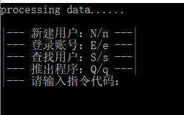
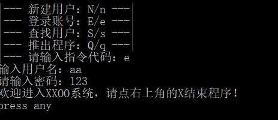
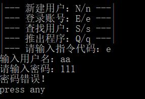
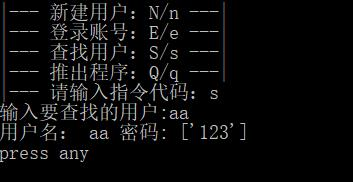
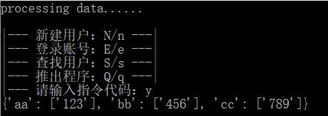

数据保存我选择了txt，下次可以试下json。使用了pickle模块的load、dump来进行字典的写入。 这个有很多问题，例如不存在txt的时候报错，没有措施。。。懒得写。。 还有其他各种乱七八糟的小问题，这次不严格了。 来了。。。无敌简易 。
<1、菜单主程序
#coding=utf-8
import pickle
import os
import new1
import denglu
import search
'''----判断文件是否为空----'''
print ("processing data......")
able=os.path.getsize('new1.txt')
if able==0:
a={}
f2 = open('new1.txt','wb')
pickle.dump(a,f2)
f2.close()
else:
pass
'''----主菜单----'''
def showmenu():
prompt = '''
|--- 新建用户：N/n ---|
|--- 登录账号：E/e ---|
|--- 查找用户：S/s ---|
|--- 推出程序：Q/q ---|
|--- 请输入指令代码：'''
while True:
chosen = False
while not chosen:
choice = input(prompt)
if choice not in 'NnEeQqYySs':
print('您输入的指令代码错误，请重新输入：')
else:
chosen = True
if choice == 'q' or choice == 'Q':
break
if choice == 'n' or choice == 'N':
new1.new1()
os.system( 'cls' )
if choice == 'e' or choice == 'E':
denglu.denglu()
os.system( 'cls' )
if choice == 's' or choice == 'S':
search.search()
os.system( 'cls' )
if choice == 'y' or choice == 'Y':
f2 = open('new1.txt','rb')
b=(pickle.load(f2))
print(b)
f2.close()
showmenu()
其实代码，有些凌乱。主菜单也没有什么好说明的，就是缺点在于，每次都是在功能模块中读取写入 文件，我不知道效率如何。希望过些时间，能回来改进。。。 有个y的隐藏功能，用了看看，具体数据的，习惯。 也多了个search功能，用来玩的。。。
2、注册程序
#coding=utf-8
'''新建用户名'''
import pickle
def new1():
f2 = open('new1.txt','rb')
b=(pickle.load(f2))
while True:
name=input('输入用户名：')
if name in b:
print( '此用户名已经被使用，请重新输入：')
continue
else:
break
f2 = open('new1.txt','wb')
new={name:[123]}
passwd = input('请输入密码：')
new[name][0]=passwd
b.update(new)
pickle.dump(b,f2)
f2.close()
a=input('press any')
用完rb,又用wb，感觉不太好用，暂时没想到好方法。 字典的写入写的有些麻烦啰嗦，不过暂时只能想到这样子。
3、登陆程序
#coding=utf-8
import pickle
def denglu():
f2 = open('new1.txt','rb')
b=(pickle.load(f2))
while True:
name = input('输入用户名：')
if name not in b:
print( '您输入的用户名不存在，请重新输入：')
continue
else:
break
passwd = input('请输入密码：')
if passwd == b[name][0]:
print('欢迎进入XXOO系统，请点右上角的X结束程序！')
else:
print('密码错误！')
f2.close()
h=input('press any')
不爽同上。
4、搜索程序
#coding=utf-8
import pickle
def search():
f2 = open('new1.txt','rb')
b=(pickle.load(f2))
name=input('输入要查找的用户:')
if name:
if name in b:
yonghu='用户名：'
mima='密码:'
print(yonghu,name,mima,b[name])
else:
print('不存在')
a=input('press any')
不爽同上。 简单的演示截图
    